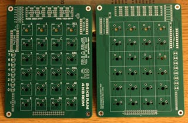
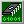

If you want to build your own Savia 84, the ordering process is easy: Just download the two Gerber files available further down this page and upload them to PCBWay using their "Upload Gerber Files" utility. The default settings are suitable for most projects, but you can customize the color of the PCBs if you wish.
Thanks to a built-in RAM battery backup, it's much more convenient to use compared to most CPU trainers; there's no need to worry about losing the programs you've written when the computer is unplugged!
I've developed a handheld version of this computer with a mechanical keypad and more ROM/RAM than the original. The specifications for this version of the Savia 84 are as follows:
The static RAM chip in the Savia 84 is connected to a 3V coin-cell battery (CR2032 or CR2025). When the computer is switched off, this battery provides enough power to the RAM to keep its contents preserved. Two diodes are used to stop the 5V power supply from damaging the battery, and to prevent the battery from trying to power anything other than the RAM.
In practice, I've found that a CR2032 battery will allow the system to retain data for about two weeks.
The 64-pin expansion connector on the side of the unit provides 5V power output, all CPU signals, chip select signals from the address decoder, and two unused I/O pins from the 8255. It should be suitable for adding almost any feature you want to the base system, from an interface for loading/saving programs to a full video interface and alphanumeric keyboard.
The output of the internal 2MHz clock generator is connected to the Z80 through a jumper. By removing this jumper, you can connect an external clock signal to the expansion connector. Keep in mind that NMOS variants of the Z80 aren't guaranteed to run properly at less than around 250kHz; if you want to run the system slower than this, you'll need a CMOS Z80.
Unlike more fully-featured computers, the Savia 84 doesn't clear memory upon reset. This means there's no risk of wiping out your program if you accidentally press the reset key!
The monitor was designed with user expansion in mind. During selection of an operating mode, the L and S keys will jump to ROM addresses $0305 and $0285 respectively. By default, these addresses are located in a region of blank space which is intended for the user to add their own loading and saving routine. This could be implemented with a cassette interface connected to the expansion port, or perhaps even an SD card reader.
The monitor has several built-in subroutines that are useful for user-written programs, mainly for handling the display and keypad. There's an excellent guide on Malecky.cz that explains the monitor in much greater detail here. I've also put together an English translation of the guide here.
 Schematic - System
Schematic - System
PDF document, 587 KB
 PCB Gerbers - System
PCB Gerbers - System
ZIP archive, 401 KB
 KiCad Files - System
KiCad Files - System
ZIP archive, 987 MB - Useful if you want to make modifications to the PCB. Made with KiCad 9.
 Interactive Bill of Materials - Display & Keypad
Interactive Bill of Materials - Display & Keypad
HTML document, 360 KB
 Schematic - Display & Keypad
Schematic - Display & Keypad
PDF document, 342 KB
 PCB Gerbers - Display & Keypad
PCB Gerbers - Display & Keypad
ZIP archive, 328 KB
 KiCad Files - Display & Keypad
KiCad Files - Display & Keypad
ZIP archive, 863 KB - Useful if you want to make modifications to the PCB. Made with KiCad 9.
Keypad Label Sheet
PNG image, 281 KB - Keypad labels for printing, intended for use with transparent cover keycaps. Measure how much space is under the keycap covers before printing; there's a DPI guide on the image to aid in getting the labels to print at the right size. Make sure to cut out the labels around the inside of the black outlines.
 Custom Fonts
Custom Fonts
ZIP archive, 174 KB - Custom fonts used for the KiCad files. Only needed if you want to modify these files.
 Original Schematics
Original Schematics
ZIP archive, 12.3 MB - Jaroslav's original schematics for the Savia 84. Note that "pin 16" of the 3205 decoder in the 1990 schematic is actually pin 15; VCC should be connected to pin 16.

Monitor ROM
BIN data, 1.00 KB - The original 1KB monitor ROM, first published in 1990. Write this to the first 1KB (0000-03FF) of the 4KB ROM area; the rest of the ROM can be used however you like.
Example Programs
ZIP archive, 4.53 KB - Source code for three example programs I've written for the Savia 84. Should be compatible with most assemblers.
 Mikroprocesor Z80 a jeho aplikace (1984)
Mikroprocesor Z80 a jeho aplikace (1984)
ZIP archive, 18.1 MB - Jaroslav's first book mentioning the Savia 84 circuit.
 Jednodeskový mikropočítač (1990)
Jednodeskový mikropočítač (1990)
ZIP archive, 10.8 KB - The relevant section of Jaroslav's second article about the Savia 84, published in Radioamatérské konstrukce 4 (1990). Contains the first known publishing of the monitor code.
NOSTALCOMP.cz: The Savia 84 article on this site is what made me aware of this computer in the first place! Unfortunately, it's currently only available on the Internet Archive. (An English translation of the page is available here.)
Malecky.cz: An excellent explaination of how the Savia 84's monitor works is available on this site. (An English translation is available here.) Make sure to check out the "Stone 1" on this site, a Z80 computer based on the Savia 84 and Tesla PMI-80.
Last updated on Nov 30, 2025.
This page was first uploaded on Nov 30, 2025.
visitors since Dec 26, 2025.
{kind=link}
{kind=link}